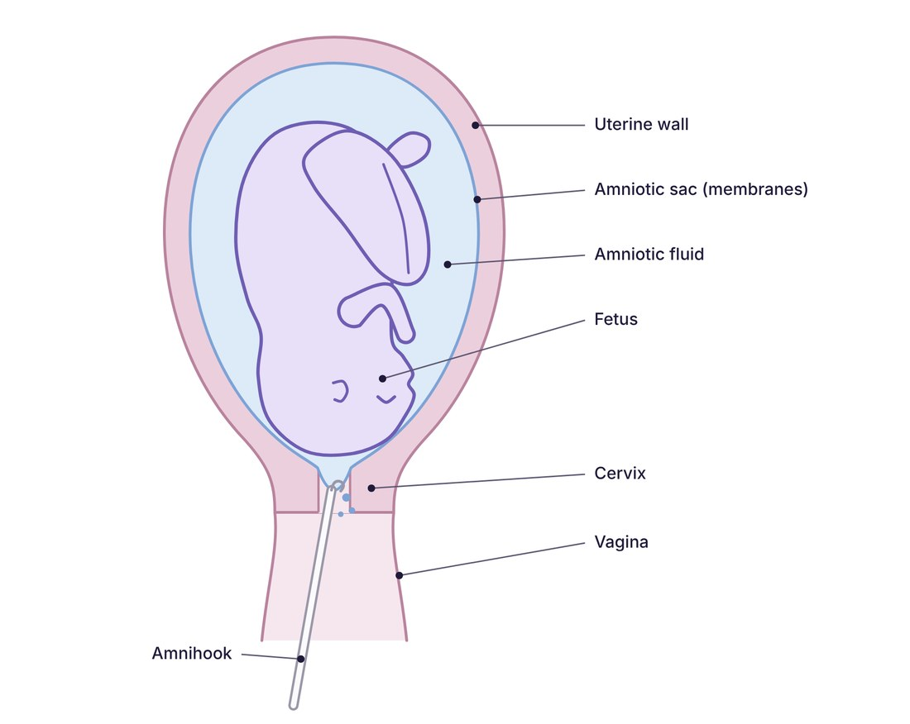
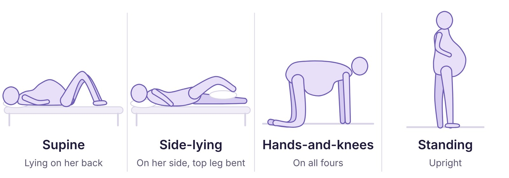
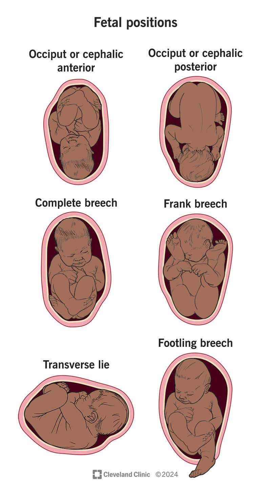

Overview
The Rutgers-Newark midwifery program trains students on a $16,527 obstetric simulator that can’t model many of the situations they need to practice. My senior design team was tasked with building a more comprehensive, lower-cost alternative. We are designing around what the program’s users want, which is a low-fidelity model that keeps instructors as involved as students. In our interviews, instructors said they prefer the realistic, soft-tissue feel of the low-fidelity model and the ability to control fetal descent by hand over the motorized, high-fidelity version. Our project advisor, the program’s director, emphasized student immersion as her top priority. We aim to keep that immersion while expanding what the current simulator can teach.
Background
Nurse-midwives are advanced practice nurses trained in gynecologic, prenatal, labor and delivery, postpartum, and newborn care [1]. They care for a mother through pregnancy, birth, and the weeks after, and build a trusting relationship with her along the way. That trust matters most for first-time mothers facing an unfamiliar and often intimidating experience. Most of a midwife’s work during the birth itself is hands-on. Midwives locate the fetus by palpating the abdomen [2], judge progress by vaginal exam, guide the head and shoulders through the birth canal, and repair tears afterward, all in whatever position is most comfortable for the mother [3].
Most births are low risk, and the midwife’s role is mainly to support the mother rather than to intervene. But when a rare emergency does occur, the midwife has to know exactly what to do for both mother and baby. To pass through the pelvis, the fetus must flex, rotate, and extend its head to fit the shape of the birth canal [4], and a delivery that has progressed normally for hours can stall or turn dangerous at any moment. In shoulder dystocia, the anterior shoulder catches behind the mother’s pubic bone after the head has delivered, and the midwife must work through a sequence of maneuvers, including repositioning the mother, to free it [5]. Cord prolapse, breech births, and postpartum hemorrhage are a few other emergencies that midwives must learn to recognize and treat effectively.
Each of these emergencies is uncommon, so a student can finish clinical training without ever managing one. The skills have to be mastered beforehand through repeated simulation drills, where the instructor can stage a scenario on demand and the student can repeat a maneuver until they can perform it accurately and confidently under pressure. This training improves outcomes. After one UK hospital introduced obstetric emergency training for its maternity staff, the rate of newborns with low Apgar scores and hypoxic brain injury fell significantly [6].
For high-fidelity training, the benchmark is Gaumard’s VICTORIA S2200, which its manufacturer calls the gold standard in obstetric emergency training [7]. VICTORIA is a full-body robotic patient. A computer-controlled system moves the fetus through the birth canal, sensors log the force applied to the fetus and the angle of the mother’s legs, and her vital signs worsen with simulated postpartum blood loss until the learner intervenes. Preprogrammed scenarios cover shoulder dystocia, breech delivery, prolapsed cord, and postpartum hemorrhage [7]. Because motors advance the fetus, the instructor runs the delivery through software rather than by hand, the opposite of what the instructors we interviewed prefer.
Motivation
My EMT certification course included obstetric training on a simulator, where we practiced delivering a baby, caring for the mother, and managing complications. These emergencies are rare in the field, but anything can happen on a 911 call, so EMTs have to learn many of the same hands-on skills as midwives.
The training was intimidating, and the thought of using it on a real call even more so. Since then, nearly every call I’ve led has shown me how much a patient benefits from a provider who stays calm, and that this composure only comes from drilling a skill until it’s second nature. To give their patients the best care, midwives need tools that let them build that confidence. Our simulator is designed to give them that practice, so they can respond to an emergency without hesitation.
Current Simulator

The program’s preferred model is the MODEL-med Sophie and Her Mum, a low-fidelity simulator for cephalic, breech, and shoulder dystocia deliveries, with optional placenta, postpartum uterus, and postpartum hemorrhage add-on packages [8].
These photos show how instructors improvise the positions the simulator doesn’t support, using a pelvis model suspended from a wooden stand, a separate newborn, and a placenta with umbilical cord.
This is the setup our new design is meant to improve on.
Problems
We identified these by interviewing program instructors and observing a demonstration.
Positioning. The simulator only supports the supine and hands-and-knees birthing positions. For hands-and-knees, it has to be mounted beneath a plate on a custom frame, with stirrups from a separate vendor supporting the legs. The assembly is unstable and awkward to put together, and extra assistants are needed to hold it steady. Other delivery positions cannot be simulated.
Cost and supply chain. The unit costs $16,527 and is manufactured in Australia, so replacement parts and support are slow to arrive. The stirrups used for the hands-and-knees configuration are handmade by a nonprofit, Breech Without Borders.
Maintenance. The simulator must be fully dried and powdered between sessions, or trapped moisture can cause mold growth and the material can adhere to itself. Instructors reported that the seam where the polymer body meets the metal backing plate is hard to reach to dry and powder thoroughly.

Anatomical fidelity. The umbilical cord and placenta in the add-on package aren’t anatomically realistic. The simulator also has no amniotic sac, so students cannot practice amniotomy, the artificial rupture of membranes with an amnihook to induce or advance labor [9]. The amnihook is a dedicated instrument, and without a sac inside the simulated uterus to practice on, the closest students can get is popping a water balloon.
Fetal descent. Instructors prefer advancing the fetus by hand for the control it gives them over the pace of a lesson. During a demonstration of a standard lesson, they emphasized that water-based lubricant must be applied to the fetus and the birth canal, both per the user manual and for ease of use. Even so, they reported that the fetus can be difficult to push through, particularly in breech and when the simulator is mounted on the unstable frame.
Design Requirements
We derived these requirements from the problems above and from interviews with instructors and students.
Tissue response. The maternal and fetal components should mimic the mechanical properties of skin, particularly in the birth canal and vulva. These regions have to stretch for the fetus to pass, so a skin-like material is needed for both function and realism. It’s also why instructors prefer the low-fidelity simulator over the high-fidelity model they own. The low-fidelity materials feel like real skin, while the high-fidelity model is mostly hard plastic to house its mechanical components.
Maternal positions. The simulator should support the supine, hands-and-knees, side-lying, and standing positions. A frame will hold the simulator stable in each position and allow it to be repositioned between them, so that one instructor and one assistant can run a lesson.

Fetal presentations. The fetus and pelvis should accommodate the occiput anterior and occiput posterior positions as well as frank and complete breech presentations. They should also support the shoulder dystocia scenario the current simulator already covers.

Manual control. Instructors will continue to advance the fetus by hand, which lets them control the pace of the lesson. The fetus should pass through the birth canal in every supported position without excessive force when the standard water-based lubricant is applied.
Umbilical cord and placenta. The cord and placenta should be closer to the real organs in size and texture. The cord should be able to simulate a nuchal cord and cord prolapse, and the placenta should be able to model placenta previa.
Postpartum hemorrhage. The simulator should support postpartum hemorrhage scenarios, which the current simulator offers only as a separate add-on package. Instructors should be able to set the volume and rate of simulated blood released.
Cost. The simulator should be significantly cheaper than the current model. Its parts should be easy to source, and replacements should be inexpensive and readily available.
Next Steps
My team is now planning our prototyping process. We are modeling the mother and fetus in 3D CAD, focusing on accurate anatomy of the vulva, birth canal, and uterus. We are also designing a stand stable enough for one instructor and one assistant to run a lesson that can still switch between positions quickly. From the CAD models, we will 3D print scaled-down molds and use them to cast small silicone prototypes. These prototypes will let us compare silicone formulations, test the internal structural support, and validate the molding process before we build the full-scale simulator.
Photos


References
[1] Rutgers School of Nursing. Nurse-Midwifery. https://nursing.rutgers.edu/midwifery/
[2] Superville SS, Siccardi MA. Leopold Maneuvers. In: StatPearls. Treasure Island (FL): StatPearls Publishing; 2025. PMID: 32809649.
[3] Gupta JK, Sood A, Hofmeyr GJ, Vogel JP. Position in the second stage of labour for women without epidural anaesthesia. Cochrane Database Syst Rev. 2017;5:CD002006. doi:10.1002/14651858.CD002006.pub4
[4] Liao JB, Buhimschi CS, Norwitz ER. Normal labor: mechanism and duration. Obstet Gynecol Clin North Am. 2005;32(2):145-164.
[5] Davis DD, Roshan A, Varacallo MA. Shoulder Dystocia. In: StatPearls. Treasure Island (FL): StatPearls Publishing; 2025. PMID: 29261950.
[6] Draycott T, Sibanda T, Owen L, Akande V, Winter C, Reading S, Whitelaw A. Does training in obstetric emergencies improve neonatal outcome? BJOG. 2006;113(2):177-182.
[7] Gaumard Scientific. VICTORIA S2200 advanced obstetric patient simulator [product page]. https://www.gaumard.com/s2200-victoria-childbirth-simulator
[8] MODEL-med International. Sophie and Her Mum birth simulator [product listing]. HealthySimulation.com. https://www.healthysimulation.com/vendor-product/sophie-and-her-mum/
[9] Cleveland Clinic. Amniotomy. https://my.clevelandclinic.org/health/treatments/24270-amniotomy